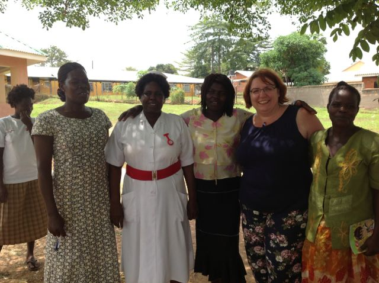

<div class="row">
  <div class="col-sm-12">
    <p class='lead'>
      Sheffield Health International Partnerships (SHIP) is a group of Sheffield health workers who are working with partners in Uganda.
    </p>
    <h3>Our partnerships</h3>
    <div class="media">
      <a class="pull-left" href="#">
        
      </a>
      <div class="media-body">
        <h4 class="media-heading">Sheffield–Gulu Mental Health Partnership</h4>
        In risus sem, interdum a urna non, pretium malesuada libero. Vestibulum ante ipsum primis in faucibus orci luctus et ultrices posuere cubilia Curae. Donec quis vehicula erat, faucibus varius urna. Ut dignissim convallis augue id feugiat. Feugiat vestibulum ante ipsum primis in faucibus orci.
      </div>
    </div>
    <div class="media">
      <a class="pull-left" href="#">
        
      </a>
      <div class="media-body">
        <h4 class="media-heading">Sheffield–Teso Health Link</h4>
        Sheffield–Teso Health Link is a multidisciplinary healthcare partnership  between Sheffield, UK and Kumi district in Eastern Uganda. Through this link we seek to provide inspiration, promote initiative, foster understanding and facilitate change for the mutual benefit of healthcare in the UK and in Uganda.
      </div>
    </div>
  </div>
</div>